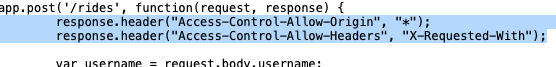
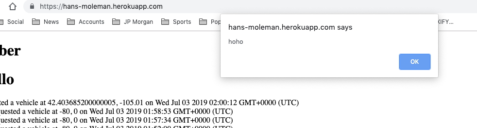
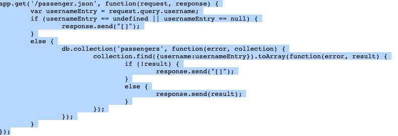

/rides method which takes in a username and a position of the user and returns all the availiable cars, the /update method which updates all of the cars availiable, a get method for passenger.json which takes in a username and returns all of the rides that the user has taken, a vehicles.json method which takes in a username and returns all of the vehicles for that user, and there is also a /(default) method which returns all of the passengers in the database.
I am hired to review and analyze this application to document and make recomendations for resolving the security and privacy issues.
In order to assess the security vulnerabilities of the application I employed black box testing followed by whitebox testing followed by a code review. In the black box testing I used web security scanner, OSWAP ZAP, which is an open source tool I downloaded. Using the tool I attacked the main site and all of the routes. After this I carried out whitebox testing which involves reading the source code, and looking for vulnerabilities in the source code. Finally I cross checked the security scanner output with the source code I was provided.
During my security analysis I found a number of issues in the ride hailing server. During my automated scan 5 vulnerabilities were discovered. Two medium and three low risk issues were dicovered in this process. One of the black box testing identified cross site scripting (xss) error. After looking at the code I was able to confirm this vlunerability by inserting malicious code into the database that generated a pop up when usernames were queried.
1) Web Browser XSS Protection Not Enabled
Location: Post Rides Method and Post update method which allows access from any origin
Severity: Medium. This was based on the automated severity rating.
Description of Issue: Web Browser XSS Protection is not enabled, or is disabled by the configuration of the 'X-XSS-Protection' HTTP response header on the web server. This was discovered by the security scanner.
Proof of Vulnerability:

Solution: Ensure that the web browser's XSS filter is enabled, by setting the X-XSS-Protection HTTP response header to '1'.
2) XXS vulnerability in the post rides method due to user id not be validated
Location: Post rides method
Severity: High risk, as this can seriosuly impact for the ability of the program to function
Descrption of Issue: The rides method does not validate the user id. Hence, a script with the < or html can be passed in as the user id. This will get stored mongodb database, and passed to other users and be executed on their browsers.
Proof of Vulnerabilty:

Solution: The username needs to be validated in the post rides method to ensure it only contains a valid string not angular brackets no scripts and no html code.
3) CSP Scanner: Wildcard Directive
Location: All get and post methods
Severity: Medium. This was based on the automaded severity rating.
Description of Issue: The following directives either allow wildcard sources (or ancestors), are not defined, or are overly broadly defined: frame-ancestor
Proof of Vulnerability: During the code review the content security policy was not set anywhere hence it would default to none.
Solution: Ensure that ride sharing application server is properly configured to set the Content-Security-Policy header.
4) X-Frame-Options Header Not Set
Location: In the passengers.json get method and the vehicle.json get method
Severity: Medium . This was based on the automaded severity rating.
Description of Issue: X-Frame-Options header is not included in the HTTP response to protect against 'ClickJacking' attacks.
Proof of Vulnerability: In the code scan there is no code to set the xframe options to DENY.

Solution: Most modern Web browsers support the X-Frame-Options HTTP header. Ensure it's set on all web pages returned by your site (if you expect the page to be framed only by pages on your server (e.g. it's part of a FRAMESET) then you'll want to use SAMEORIGIN, otherwise if you never expect the page to be framed, you should use DENY. ALLOW-FROM allows specific websites to frame the web page in supported web browsers).
In conclusion, after black box and white box testing, and after preforming a thorough code review of the application vulnerabilites described above were found. The second vulnerability mentioned above could allow a hacker to disable the entire ride sharing service. My recomendation would be to remediate all these vulnerabilities as soon as possible, and run another security test. The cost of remediation would be 3 hours of programming at $2OO per hour.